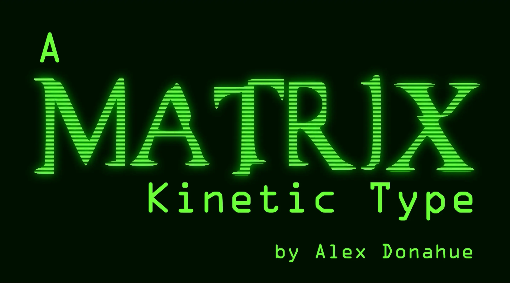

Case Study
A Matrix Kinetic Type: Kinetic Type Motion Graphics
A ~60-second kinetic typography animation built entirely around the red pill / blue pill scene from The Matrix with no footage, no imagery, just type. The constraint was the point: carry the scene's tension and philosophical weight using only scale, motion, rhythm, and timing, synced to the original dialogue and sound.

Project brief
For this project the brief was to build a kinetic typography animation that visually interprets a film scene using type alone, synced to the scene's original audio. I chose the red pill / blue pill scene from The Matrix specifically because the dialogue itself does most of the narrative work, it's a slow build of tension toward a single irreversible choice, which gave me clear emotional beats to design motion around instead of having to invent pacing from scratch.
With no footage or imagery to lean on, every storytelling decision had to happen through type: scale shifts to mark moments of hesitation, timing that matches the natural pauses in the dialogue, and motion that escalates as the scene moves toward its decision point. The goal was for the typography to carry the scene's philosophical weight on its own, proving the animation works even for someone who's never seen the film.